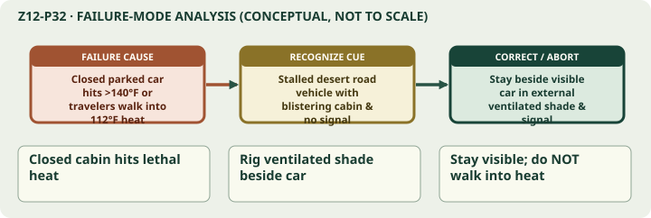

Z12-P32 · Extreme environments · New manuscript
Stay with a disabled desert road vehicle and avoid lethal closed-cabin heat
Survive a desert vehicle breakdown without walking to death in extreme heat or baking inside a sealed cabin.
When it applies · Disabled cars or trucks on desert highways, park roads or remote arid dirt tracks.
Equipment · Extra vehicle water jugs, reflective sunshade/tarp, phone/beacon and hood-up distress marker.

Actions
- Stay with the disabled vehicle on established roads—cars are vastly easier for searchers and passing motorists to spot than a lone hiker, and walking miles in 110°F+ heat rapidly proves fatal.[X07, T06, N09]
- Never sit inside a closed parked car in desert sun—cabin temperatures soar past 140°F within minutes; open doors/windows for cross-breeze or rig an external shade tarp beside the vehicle's shaded side off scorching asphalt.[X07, E19, E26]
- Signal visibility clearly (raise the hood, display bright cloth, check cell/satellite signal from safe open ground) and conserve safe water by resting completely motionless in shade during peak heat.[X07, N09, E08]
Failure recognition · Leaving a broken-down car on a park road at 1 p.m. to walk ten miles in 112°F heat, or leaving children/pets inside an un-running parked car.[X07, E08]
Verify · Confirm everyone stays out of closed hot cabins, sits in external ventilated shade beside the visible vehicle and monitors water/symptom status.[X07, E19, ED]
Stop or change course · Never leave a disabled vehicle on a traveled road unless a verified occupied building is plainly visible within a short safe walk; call 911/SOS immediately if heat illness appears.[X07, T06, T09]
Evidence and editorial notes
- E08 · CDC · About Heat and Your Health (current web edition)
- Section: Protect yourself from heat · Conditions: Outdoor activity in hot conditions
Support: Limit exertion in hot periods, take breaks in cooler places and monitor for illness.
Limitations: High humidity reduces sweat evaporation and raises heat strain at lower air temperatures. · Conflicting evidence: None; aligns with NWS-HEAT and NIOSH-H.
Editorial note: Anchors shade, pacing, and hot-weather shelter selection. · Specialist reviewer: Heat illness and emergency medicine
Primary source · checked 2026-11-24 - E19 · NWS · Heat Safety (current web edition)
- Section: Heat Safety Resources · vulnerability and linked protective actions · Conditions: High temperature and humidity outdoors
Support: Use current heat alerts and reduce exposure or seek cooled shelter when conditions warrant.
Limitations: This landing page does not quantify tent warming or universal evaporative cooling. See D21 for the bounded indoor fan guidance. · Conflicting evidence: None; aligns with CDC-HEAT and READY-HEAT.
Editorial note: Drives warm-weather tarp/shade configuration and ventilation cards. · Specialist reviewer: Heat safety and shelter design
Primary source · checked 2026-11-24
Current assessment · A04-E19 (2026-11-25) · Bounded support confirmed (A04): Follow local alerts and reduce exposure with appropriate cooling. Clinical heat injury, device limits and conflicting threats remain separate. Limits: Specialist review PENDING (Heat safety and shelter design); publication HOLD. All release decisions pending. - E26 · FEMA / Ready.gov · Extreme Heat (current web edition)
- Section: Extreme Heat > Stay Safe in Extreme Heat · Conditions: Prolonged heat waves and high overnight temperatures
Support: Use ventilated shade, hydration, light breathable clothing, and cooling centers when available; monitor vulnerable companions continuously for heat exhaustion or heat stroke.
Limitations: Shaded tarps reduce radiant load but cannot replace medical cooling when core temperature rises. · Conflicting evidence: None; aligns with CDC-HEAT and NWS-HEAT.
Editorial note: Supports hot-weather shelter orientation and heat-stress stop conditions. · Specialist reviewer: Heat safety and emergency medicine
Primary source · checked 2026-11-24 - N09 · NPS · Outdoor Emergency Plan (current web edition)
- Section: If You Get Lost; Seek help · Conditions: Lost hiker who cannot safely retrace steps and has sought rescue
Support: Report last known location and landmarks. Stay put while awaiting help unless an immediate threat requires getting to safety.
Limitations: Navigation, signaling method and safe movement depend on site and responder instructions. · Conflicting evidence: See A02 claim audit for boundaries.
Editorial note: Core evidence for lost-person psychology, signaling and SAR coordination cards. · Specialist reviewer: Search and rescue
Primary source · checked 2026-11-24 - T06 · NPS · Outdoor Emergency Plan (current web edition)
- Section: If you get lost or hurt; call for help · Conditions: Outdoor US emergency
Support: Communicate location, last known point, situation and needs. Stay put when unable to establish a safe route unless immediate danger requires movement.
Limitations: Cell signal is unreliable in backcountry terrain; pre-trip plans bridge communication gaps. · Conflicting evidence: None; core lost-person decision rule.
Editorial note: Foundation for stay/signal/move and dispatch handoff cards. · Specialist reviewer: Search and rescue
Primary source · checked 2026-11-24 - T09 · CDC NIOSH · Heat-related Illnesses (current web edition)
- Section: Heat stroke > Symptoms and First aid · Conditions: Suspected heat stroke after exertion or heat exposure
Support: Confusion, slurred speech or loss of consciousness can indicate heat stroke. Call 911 and cool the person promptly.
Limitations: Exertional heat stroke can occur even in moderate ambient temperatures during heavy effort. · Conflicting evidence: None; aligns with T05.
Editorial note: Triggers immediate emergency call and cooling stop condition. · Specialist reviewer: Emergency and wilderness medicine
Primary source · checked 2026-11-24 - X07 · NPS · Death Valley Safety (Desert Travel and Heat) (current web edition)
- Section: Death Valley Safety > Desert Heat, Dehydration, Flash Floods and Vehicle Breakdown · Conditions: Arid desert travel, canyon country and extreme summer heat
Support: Desert heat accelerates fluid and electrolyte loss rapidly, temperatures inside parked vehicles spike to fatal levels within minutes, dry washes flash-flood from distant storms and staying with a disabled road vehicle is generally safer than walking into extreme heat.
Limitations: Cell service is widely absent across desert basins; water needs can exceed 1 gallon/day dramatically during heat. · Conflicting evidence: None; aligns with CDC-HEAT and NWS-HEAT.
Editorial note: Core desert-environment evidence across Z12 heat/arid cards. · Specialist reviewer: Desert safety and emergency medicine
Primary source · checked 2026-11-24
Source lineage · NPS Death Valley safety and NWS heat; new manuscript · Classification · New manuscript.